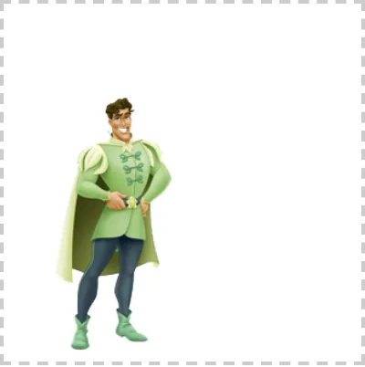
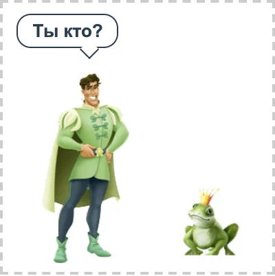
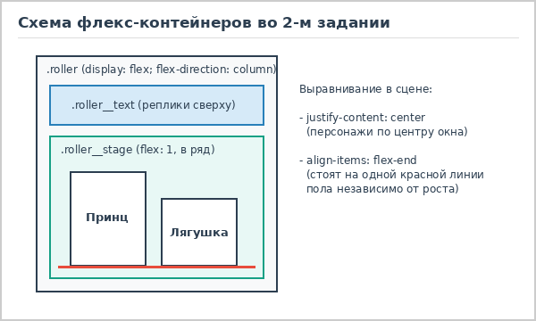

Задание 2. Интерактивный Flexbox-ролик (вариант 3)
Во второй лабораторной работе нужно было сверстать небольшую анимированную сценку "Принц и лягушка"
в контейнере 200x200 пикселей с использованием технологии Flexbox. Главное условие - все переходы
и смена кадров должны работать только за счет CSS-псевдоклассов :hover и :active,
без подключения JavaScript.
Результат работы
Наведите курсор на окно ролика (а также отдельно на принца или лягушку), а затем зажмите левую кнопку мыши:


Как развивается сюжет по состояниям
Вся анимация разбита на три основных кадра, которые переключаются в зависимости от действий пользователя:
- Состояние покоя (курсор вне блока): на сцене стоит только принц, реплики сверху скрыты, а блок с лягушкой прозрачен и сдвинут вправо за пределы видимости.
- Наведение мыши (
:hover): как только курсор попадает на контейнер.roller, справа плавно выезжает лягушка, а сверху появляется табличка с вопросом "Ты кто?". Если при этом навести курсор прямо на принца, он начинает удивленно качать головой, а если навести на лягушку - она подпрыгивает. - Нажатие и удержание кнопки мыши (
:active): пока зажата левая кнопка мыши, лягушка исчезает, вместо нее плавно увеличивается фигура принцессы, а текст в верхней части меняется на ответ "Я принцесса".


:hover) - выход лягушки.
:active) - появление принцессы.Построение сетки на Flexbox

Вся геометрия ролика держится на двух уровнях Flexbox. Главный контейнер .roller работает
как вертикальная флекс-колонка (display: flex; flex-direction: column). Верхний блок
.roller__text занимает фиксированную высоту под реплики (flex: 0 0 3.6em),
а нижний блок сцены .roller__stage растягивается на все оставшееся пространство за счет
flex: 1.
Внутри самой сцены снова включен Flexbox, но уже в виде обычной строки. Персонажи выравниваются по центру
горизонтали через justify-content: center и прижимаются к нижней границе окна с помощью
align-items: flex-end. Это оказалось очень удобно: хотя спрайты принца, лягушки и принцессы
имеют разную высоту, флекс-контейнер сам ставит их ровно на одну линию пола без ручного подбора координат.
Также все размеры внутри flex.css я записал в относительных единицах em, отталкиваясь
от базового размера шрифта font-size: 10px у контейнера .roller (ширина и высота
20em дают как раз нужные 200x200 пикселей). Если понадобится увеличить весь ролик в полтора или два раза,
достаточно поменять одну строчку font-size, и все персонажи, отступы и сдвиги отмасштабируются
вместе с окном.
Анимация деталей и мелкие хитрости
Чтобы принц мог качать головой при наведении курсора, в папке с картинками было три отдельных изображения:
цельный принц (prince1.png), туловище без головы (prince2.png) и отдельно голова
(prince3.png). В обычном состоянии показывается цельная картинка, а когда курсор наводится на
.roller__prince, она скрывается, и на том же месте проявляются туловище и голова, для которой
запускается бесконечная анимация @keyframes head-shake.
При этом точку вращения головы нужно было сместить к нижнему краю картинки через transform-origin: 50% 100%,
чтобы голова наклонялась именно в районе шеи, а не крутилась вокруг своего центра. А чтобы во время удержания
левого клика браузер не пытался перетаскивать PNG-картинку как файл (из-за чего сбрасывается состояние
:active), всем тегам img добавлен атрибут draggable="false" и свойство
-webkit-user-drag: none.